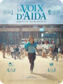
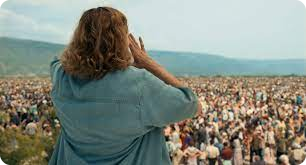

Aida's voice: Some suffering knows no end.
27 years have passed, but the wounds, trauma and suffering are still present among the Bosnian people. the Bosnian people. Jasmila Zbanic, director born in Sarajevo in Bosnia-Herzegovina, tells us the poignant story of this country and its people of this country and its people through several films. She is one of the only women to have made cinematographic works on the war, with the aim of giving her feminine vision on the past of this country bruised by the Serb armies.
Her films, such as the most recent one, Aida's Voice, released in 2021, are made with the aim of bringing to light the 1992-1995 war and genocide in Bosnia-Herzegovina, but especially the experience of women at that time. Indeed, Jasmila Zbanic lived through the tragic period of her country, and the wounds and traumas caused by the Serbian militia to the fifty thousand Bosnian women had to be brought to light according to the director.
A homage through a film.
In Aida's Voice, Jasmila recounts the Srebrenica genocide, which claimed 8,000 victims in three days in July 1995, making the trauma 27 years later still as violent as ever. As the Srebrenica genocide claimed 8,300 lives, the outcome of Aida's Voice was predictable. In July 1995, thousands of Srebrenica's inhabitants fled to the Blue Helmets after the town was overrun by the Serbian army.

From English teacher to translator for the ONU.
Played by Jasna Durcic, Aida, an English teacher, who becomes a translator for the UN, finds herself powerless against the actions of Serbian militias. The young woman, who has confidential information She is worried about her husband and her two sons, whom she wants to protect more than anything else. Between the translations to be done, trying to get her family into a shed, while hiding from the cameras, Aida is certain that the worst is inevitable, such as the death of one of her sons. A few years later, she returns to Srebrenica, hoping to find her old job and apartment.